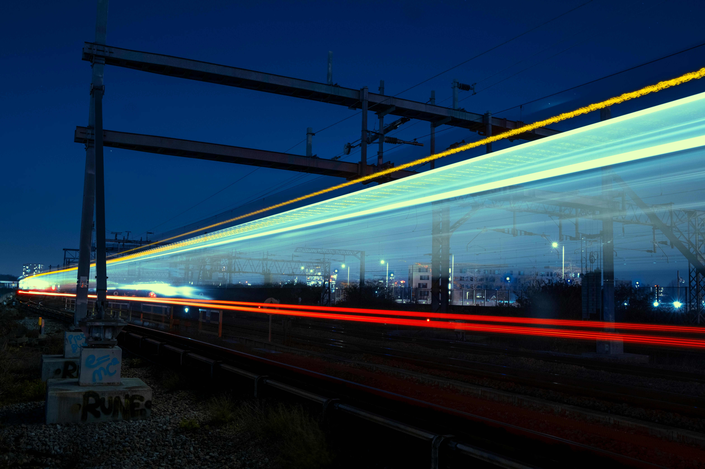
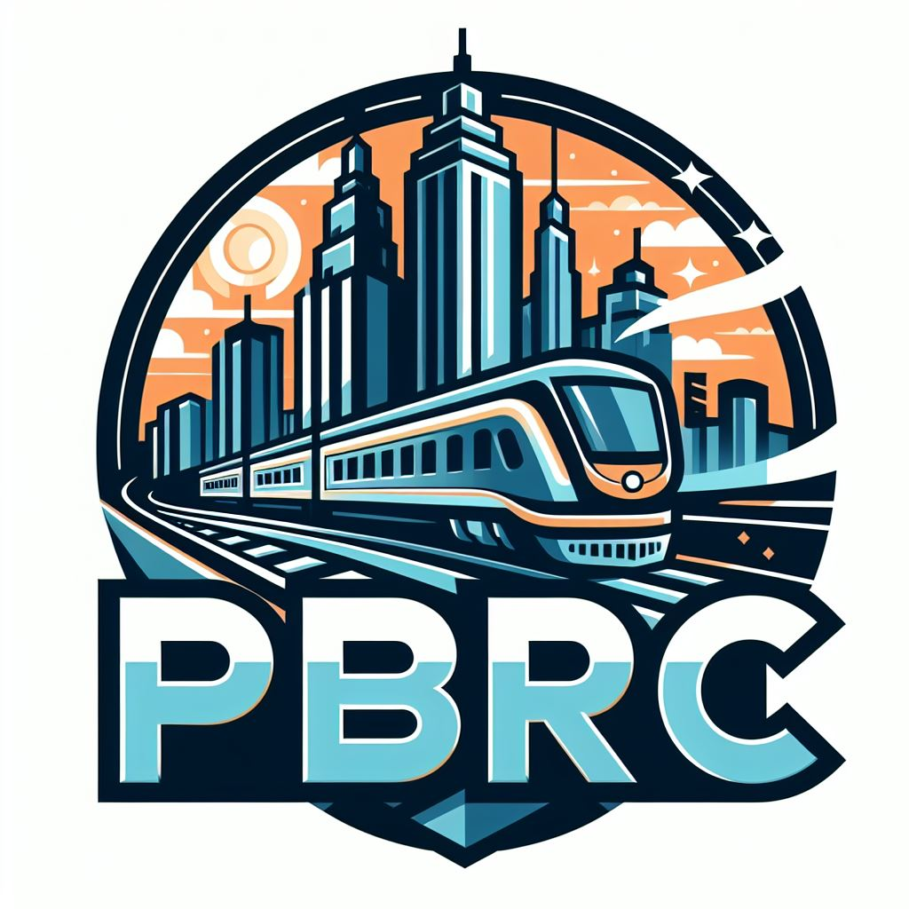
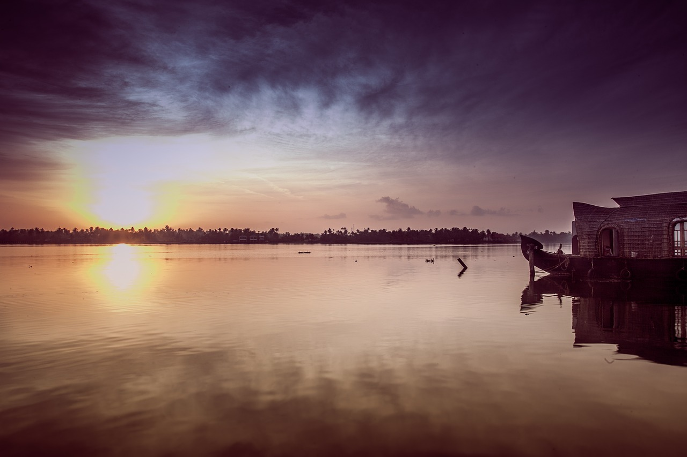
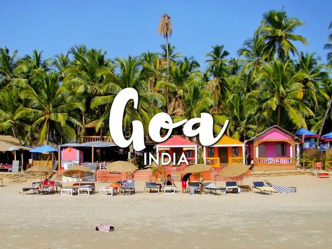
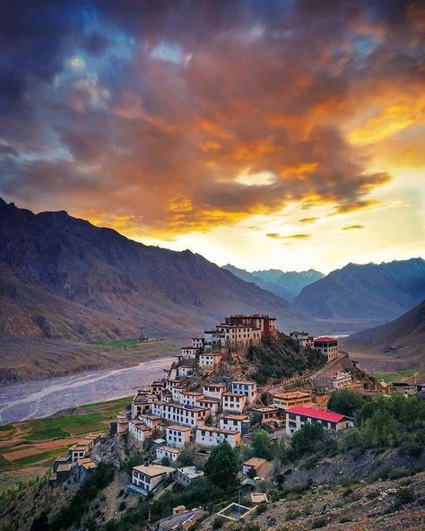
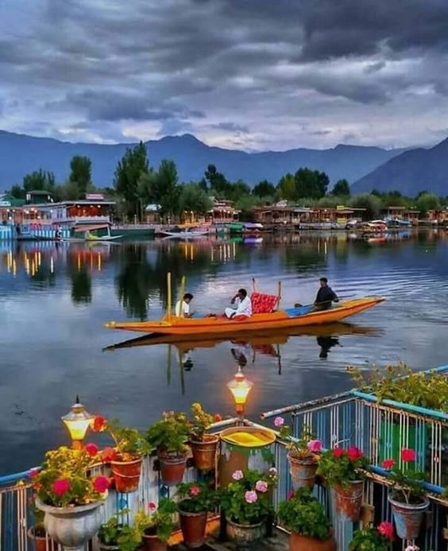
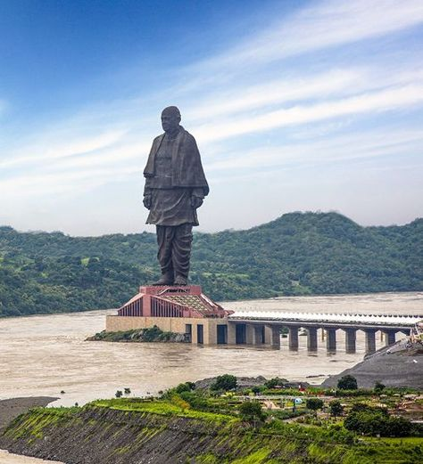

About Bullet Train
India's aim to achieve the target of USD 8.4 trillion in terms of the economy by 2030 will make them the third-largest economy in the coming 25 years. India has proven its immense ability in other fields, including space, as a major contributor. The nations which are a part of the high-speed rail network are considered well-developed; now, it's time for India to speed up the rate of the Bullet Train Project. This will enhance India's international stature and further boost the relationship between India and Japan, leading to more such investments.
- Employment opportunities: The Mumbai-Ahmedabad High-Speed Rail Project alone, as estimated, will generate approximately 4,000 direct jobs. Apart from this, 20,000 indirect jobs will also be generated along with 20,000 construction workers availing the opportunity of employment till the commencement of the bullet train.
- The citizens of India have a variety of options to commute, which includes private transport, buses, and airlines. To make railways a prime mode of transportation, speed, and comfort, frequency of operation and punctuality must be enhanced.
Have you not found the right one?
Find a service suitable for you here.


PBRC Customer Care No: 12345
PBRC Never ask your Personal Banking information such as Debit / Credit Card / Account Number / OTP / PIN / CVV / PAN or Date of Birth or Ask to install any app for Customer Complaint.
Holidays...!

Ooty is a renowned hill station in the state of Tamil Nadu. Often referred to as the "Queen of Hill Stations," it's nestled in the Nilgiri Hills and is known for its mesmerizing meadows, cool weather, and a variety of sightseeing places. Some of the must-visit attractions in Ooty include the Ooty Lake, Botanical Gardens, and the scenic Avalanche Lake. The town's economy is largely driven by tourism and agriculture, The town's economy is largely driven by tourism.
Read More

Munnar is a captivating hill station located in the Idukki district of Kerala, India. Known for its sprawling tea plantations, picturesque landscapes, and cool climate, Munnar is a popular destination for tourists seeking tranquility and natural beauty. Tourism is a significant part of Kerala's economy, with various experiences offered from the hills to the backwaters.The journey from these stations to Munnar is scenic and passes through picturesque landscapes.
Read More

The state of Goa, in India, is famous for its beaches and places of worship. Tourism is its primary industry, and is generally focused on the coastal areas of Goa, with decreased tourist activity inland. Foreign tourists, mostly from Europe, arrive in Goa in winter, whilst the summer and monsoon seasons see many Indian tourists. Goa's beaches cover about 125 kilometres (78 mi) of its coastline. These beaches are divided into North and South Goa.
Read More

Ladakh is a high-altitude region in northern India. Often referred to as the “land of high passes,” Ladakh is a land of stark contrasts and diverse landscapes. It is known for its snow-capped mountains, arid desert, crystal-clear rivers, and ancient Buddhist monasteries. Ladakh's unique geography and culture have made it a popular destination for travelers seeking adventure and spiritual enlightenment.Just ahead of Leh Palace, the palace is the Chamba Temple, a shrine that has a large statue of Maitreya Buddha.
Read More

Kashmir is a picturesque location featuring snow-capped mountains, alpine lakes, evergreen forests and high river valleys. In India and Pakistan it's known as heaven on earth. If you are touring the Indian-administered part of Kashmir, you may want to choose Srinagar, the summer capital of Jammu and Kashmir with its beautiful Dal Lake and snow-peaked mountains all around, as your base.Mountain trekking is popular in the Kashmir region, especially in Ladakh and Baltistan.
Read More

Within Gujarat there are historic forts, palaces, mosques, temples, and places of historical importance in India's struggle for independence. Many of these palaces and forts have been converted into heritage hotels to keep tourists close to the history of Gujarat.The Royal Orient Train is an Indian luxury tourism train that runs between Gujarat and Rajasthan, covering important tourist locations in the two states.Ahmedabad is a preferred place for medical tour or medical treatments
Read More